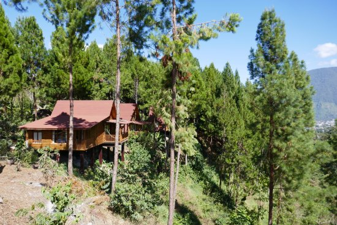
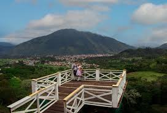
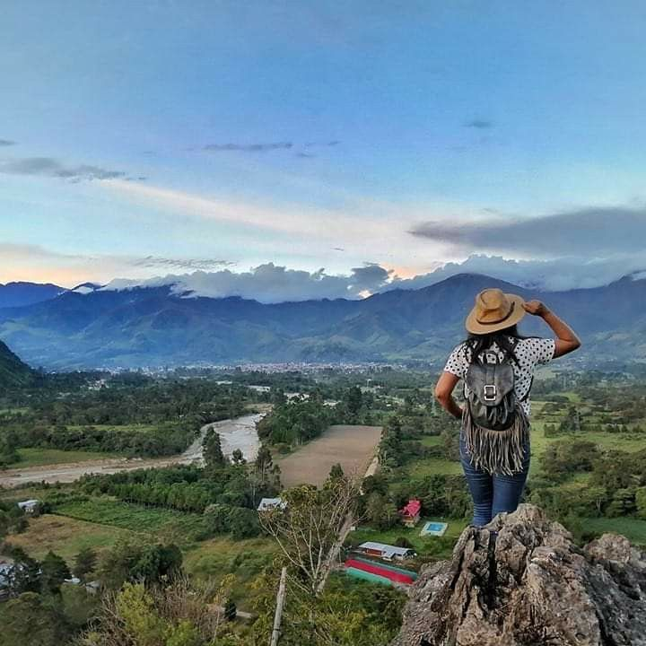
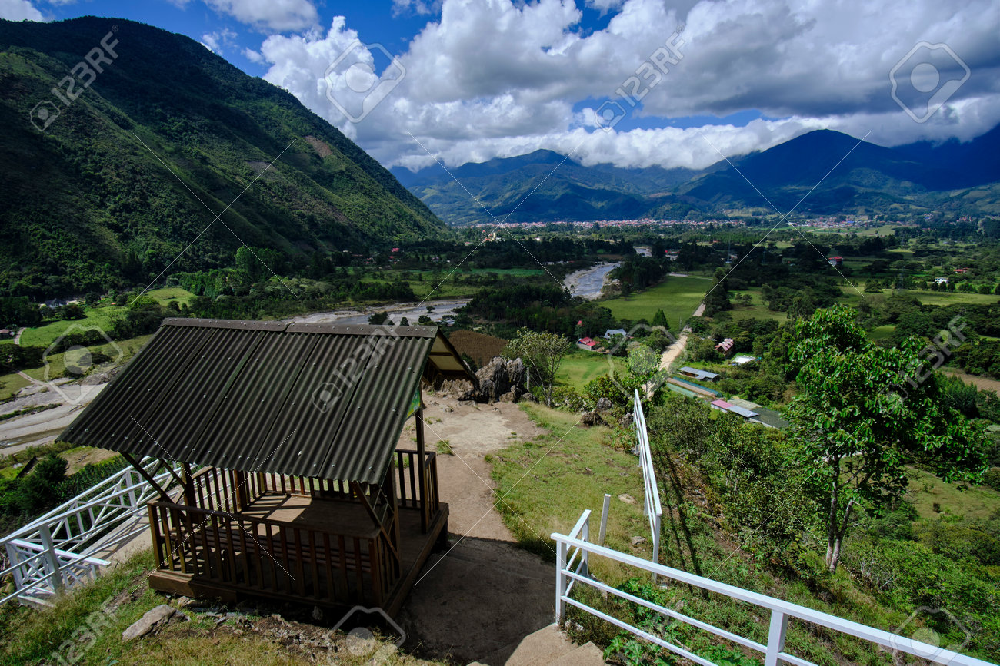

Mirador de Oxapampa: Una vista panorámica impresionante
El Mirador de Oxapampa es un punto estratégico desde donde se puede apreciar una vista panorámica de la ciudad y su exuberante entorno natural. Es un destino ideal para quienes desean admirar la belleza del paisaje y capturar fotografías inolvidables.
Características
Ubicado en una zona elevada, el mirador ofrece una vista inigualable de Oxapampa, sus montañas y valles verdes. Es un lugar perfecto para relajarse y conectar con la naturaleza.




Horarios y Ubicación
- Ubicación: Mirador de Oxapampa, provincia de Oxapampa, región Pasco, Perú.
- Horario de visita: Acceso libre durante todo el día.
- Costo de entrada: Entrada gratuita.
Consejos para Visitantes
- Lleva ropa cómoda: Se recomienda calzado adecuado para caminatas y ropa ligera.
- No olvides tu cámara: Las vistas panorámicas son perfectas para fotografías impresionantes.
- Visita en la mañana o al atardecer: Para disfrutar de las mejores luces y temperaturas agradables.
- Respeta el entorno: No dejes basura y sigue los senderos señalizados.
- Disfruta del aire fresco: Es un lugar ideal para relajarse y conectar con la naturaleza.